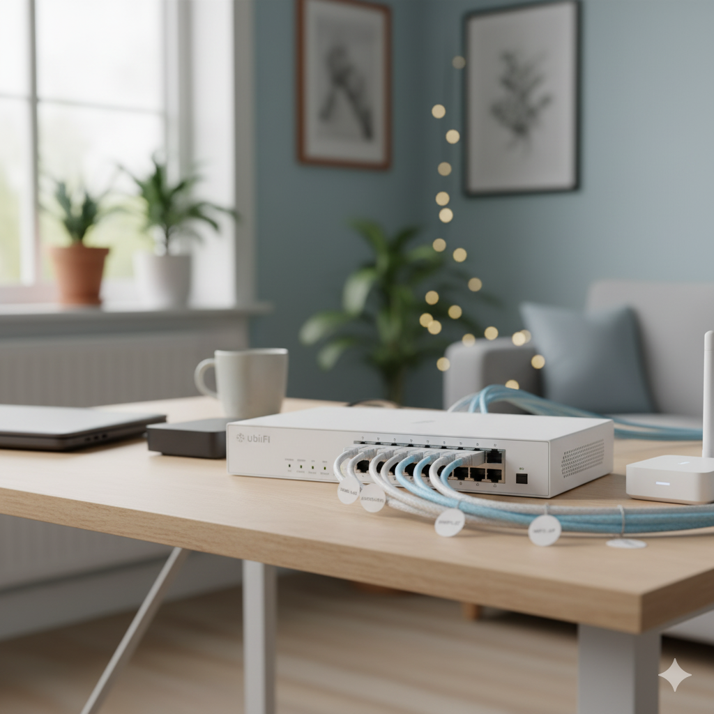
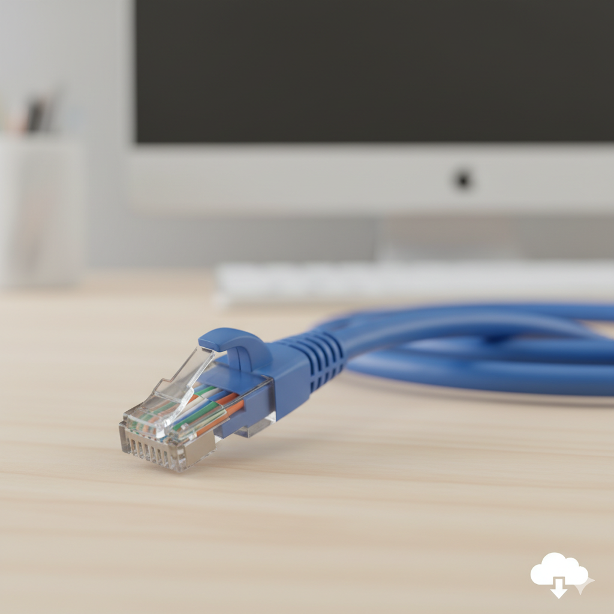

Thuis geïnstalleerd met PoE, UTP-bekabeling en volledig geconfigureerd voor optimale wifi-dekking.
In dit project heb ik thuis een Ubiquiti access point geïnstalleerd om de wifi-dekking te verbeteren. Op sommige plaatsen in huis was het signaal zwak of onstabiel, dus ik besloot dit professioneel aan te pakken zoals ik geleerd heb tijdens mijn opleiding.
Ik koos een centrale locatie voor het access point en sloot het aan via een PoE-switch. Hierdoor kon ik stroom en data combineren in één netwerkkabel, wat zorgt voor een nette en efficiënte installatie. De verbinding gebeurde met UTP-kabels die ik zelf op maat heb gemaakt en afgewerkt met RJ45 connectoren.
Daarna heb ik het access point geconfigureerd via de webinterface van Ubiquiti. Ik stelde de SSID in, activeerde WPA2-beveiliging, en optimaliseerde de kanaalkeuze om interferentie met andere netwerken te vermijden. Alles werd getest met verschillende apparaten zoals laptops, smartphones en een smart-tv.
Ik gebruikte ook een wifi-analyse app om het signaal te meten in verschillende kamers. Zo kon ik visueel zien waar het bereik goed was en waar het eventueel nog verbeterd kon worden.


Dit project gaf me een goed inzicht in hoe je een draadloos netwerk professioneel uitbreidt. Ik leerde hoe belangrijk het is om rekening te houden met plaatsing, kanaalkeuze, en beveiliging. Ook het werken met PoE was nieuw voor mij, en ik begrijp nu hoe handig dat is in situaties waar je geen aparte stroomvoorziening hebt.
Het zelf maken van UTP-kabels en het correct krimpen van RJ45 connectoren was een goede oefening in precisie en netheid. Ik heb geleerd hoe je fouten kunt vermijden, zoals verkeerd kleurgebruik of slechte verbindingen.
Tot slot gaf dit project me vertrouwen om zelfstandig een netwerkoplossing te herkennen. Ik weet nu hoe ik een access point kan installeren in een bestaand netwerk, hoe ik de prestaties kan meten, en hoe ik problemen kan oplossen als ze zich voordoen.